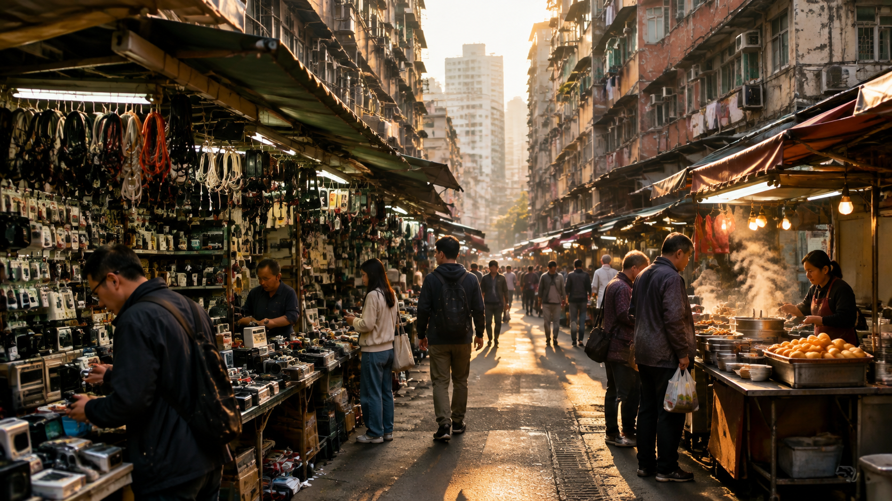
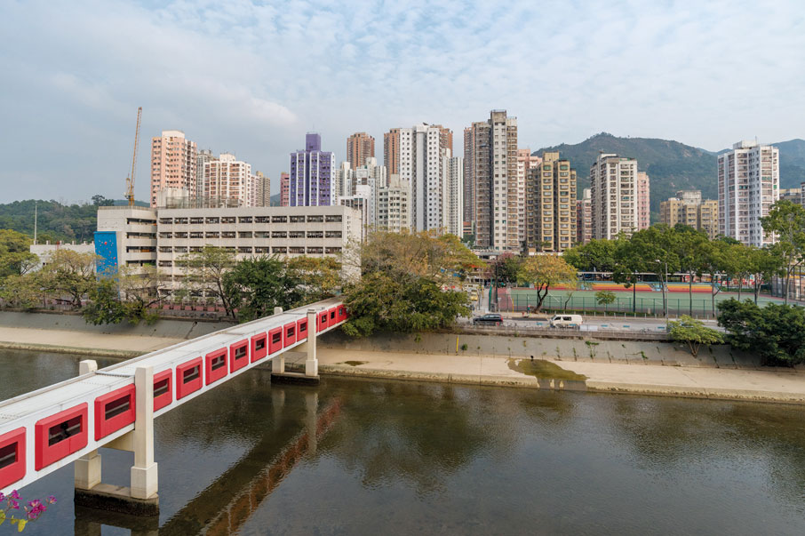
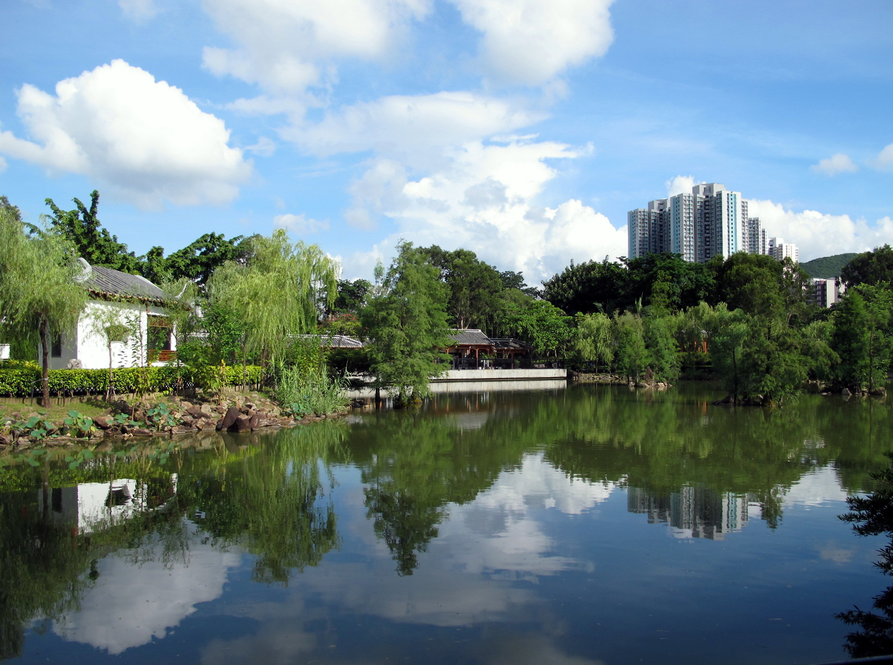

由維港兩岸到新界邊境，逐區細看歷史、街巷、人情與味道。
Central & Western
金融中心與百年殖民建築並存。
Wan Chai
舊區重建與小店文化交織。
Eastern
由炮台山到小西灣嘅海岸線。
Southern
沙灘、漁村與豪宅共存。
Yau Tsim Mong
霓虹、夜市與老唐樓。

Sham Shui Po
老香港嘅市井脈搏。
Kowloon City
寨城記憶與泰國社群。
Wong Tai Sin
香火與屋邨生活。
Kwun Tong
工業起家，蛻變成新市中心。
Kwai Tsing
貨櫃碼頭與屋邨山海。
Tsuen Wan
第一代新市鎮，山城格局。

Tuen Mun
青山腳下嘅新市鎮。
Yuen Long
圍村、魚塘與老餅家。

North
邊境墟市與鄉郊田野。
Tai Po
林村河畔與舊墟風貌。
Sha Tin
城門河兩岸嘅新市鎮。
Sai Kung
香港後花園，海鮮與海島。
Islands
大嶼山、長洲、南丫島等島嶼。
呢個係一個前端設計功課，希望用簡單嘅方式，介紹香港十八區嘅歷史、名稱由來、特色景點、交通同食物。